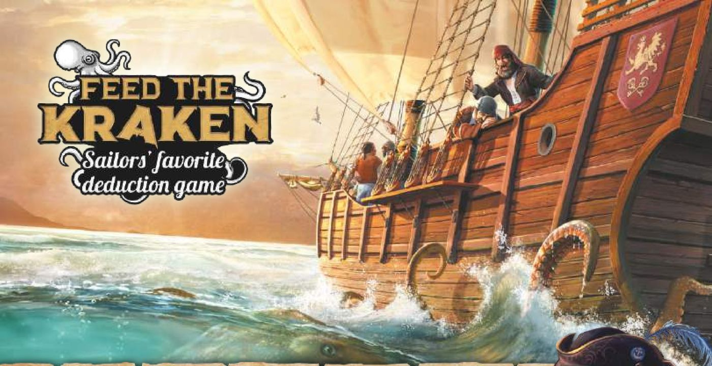
桌游新手入门教学
秘密身份、轮流掌舵、互相猜疑——把船开往你的阵营的港口。
5–11 人 · 社交推理
01 · 游戏概念
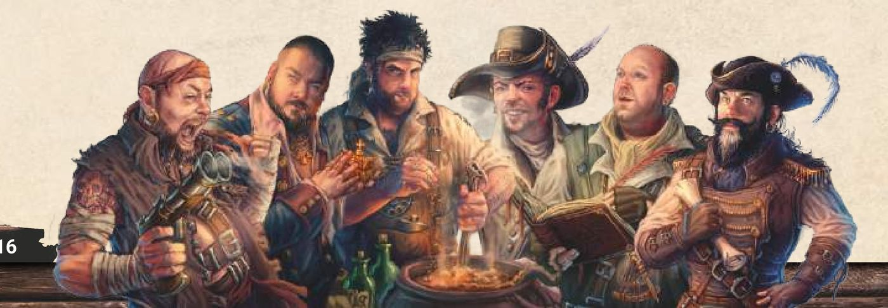
每人秘密拿到水手、海盗或邪教首领身份，只有自己知道。
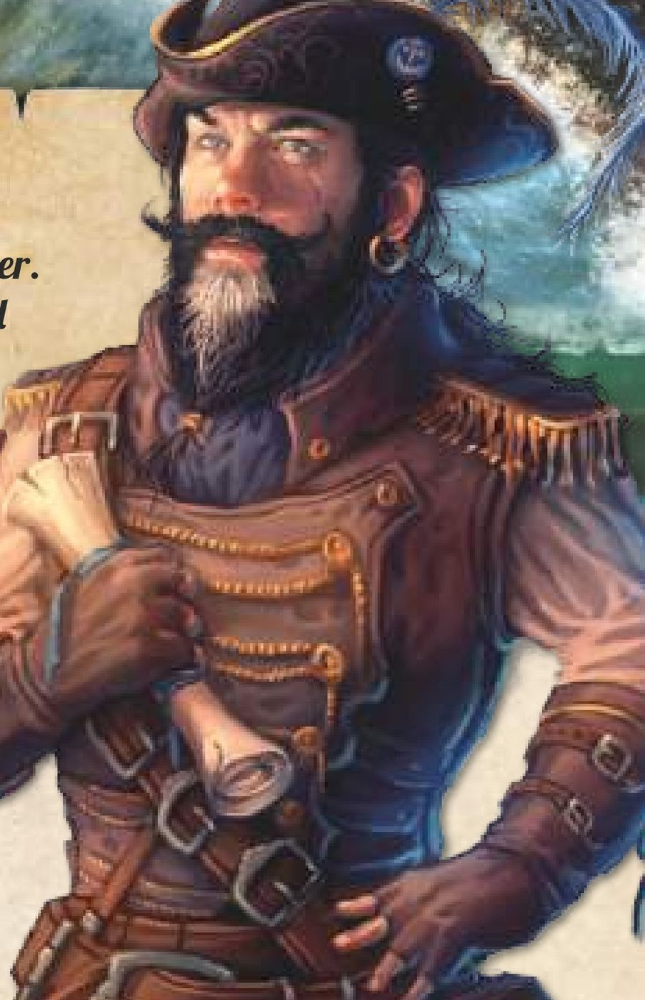
船长挑选副官和领航员，三人一起决定船往哪个方向开。
不信任船长的人事安排？亮出手里的枪，发动叛乱。
船每回合只会往 北 / 东 / 西 三个方向之一前进——但到底是哪一个？
02 · 阵营与胜利条件
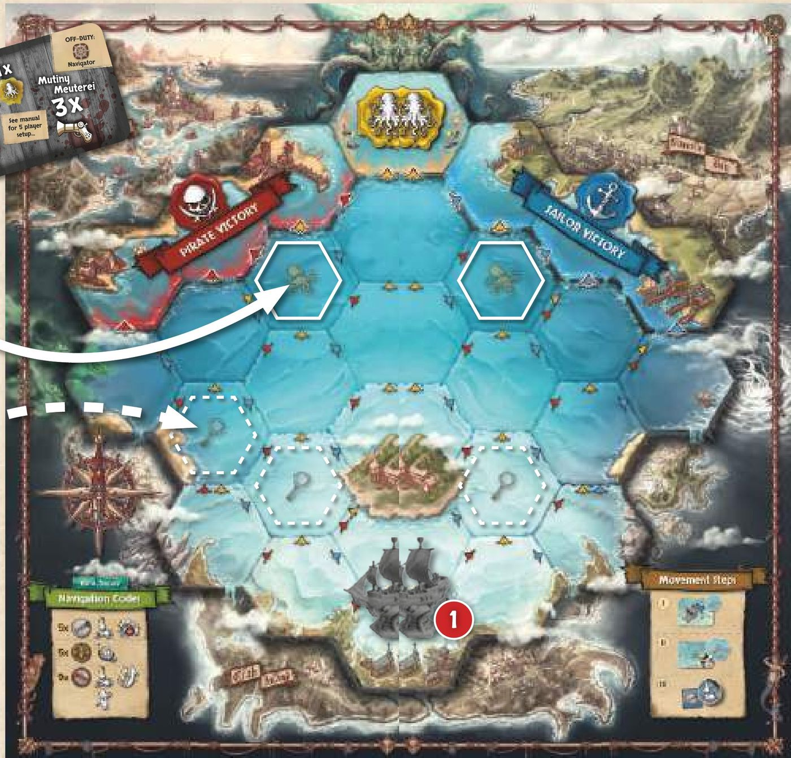
水手 · 船抵达东边的蓝水湾（蓝色区域）
海盗 · 船抵达西边的赤红湾（红色区域）
邪教首领 & 邪教徒 · 船抵达北边的克拉肯；或邪教首领在“喂克拉肯”格被献祭
永远跟队友一起赢：就算中途被扔下船，你的阵营赢了，你也赢。
03 · 人数与阵营
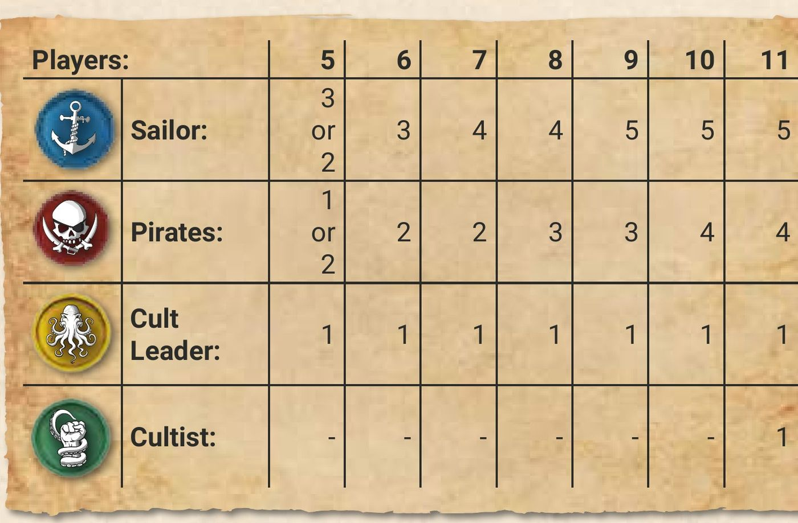
5 人局特别规则
阵营是 3 水手 + 1 海盗 或 2 水手 + 2 海盗，外加 1 个邪教首领。
准备 3 个水手、2 个海盗的袋子洗匀，随机拿掉一袋不看，再加入邪教首领的袋子。
真实配置只有海盗在秘密集会时才知道。
04 · 配件一览
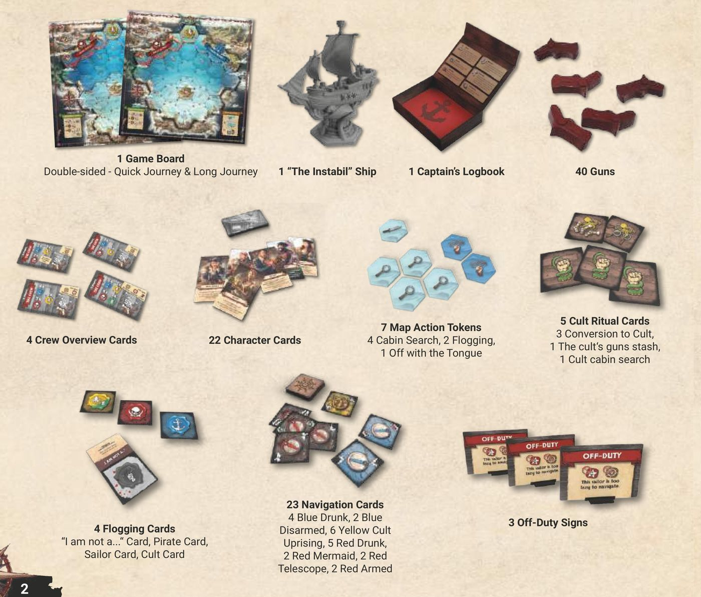
·
双面版图：快速航线 / 远航
·
40 把枪：每人开局 3 把
·
23 张航海卡：决定船的方向
·
22 张角色卡：一次性特殊能力
·
11 个海员袋 + 阵营筹码：秘密身份
·
船长日志 · 副官/领航员徽章 · 休班牌
05 · 游戏准备（快速航线）
1
船放在南边的起点。
2
地图行动标记放到对应格子：3 个搜舱、2 个喂克拉肯。
3
5 张邪教仪式卡洗匀，背面朝上摊在版图边。
4
按人数放休班牌：5–6 人 1 张，7–8 人 2 张，9–11 人 3 张。
5
航海卡拿掉 1 邪教起义、1 蓝醉酒、2 红武装，剩 19 张洗匀作抽牌堆。
6
每人拿 3 把枪。
19 张航海卡
北（黄）5 · 5 邪教起义
东（蓝）5 · 3 醉酒 · 2 缴械
西（红）9 · 5 醉酒 · 2 美人鱼 · 2 望远镜
熟悉之后，7 人以上可改用远航地图（23 张航海卡全用，并有补给线等额外规则）。
06 · 秘密身份
1
发身份：阵营筹码装进海员袋，洗匀后每人一袋，偷偷看自己的身份。
2
海盗秘密集会：全员闭眼 → 海盗睁眼互认（约 20 秒）→ 海盗闭眼 → 全员睁眼。邪教没有集会。
3
第一任船长：船长卡混入角色卡发下，拿到的人亮出，成为船长，并补拿一张角色卡。
船长拿到船长日志、副官徽章和领航员徽章。
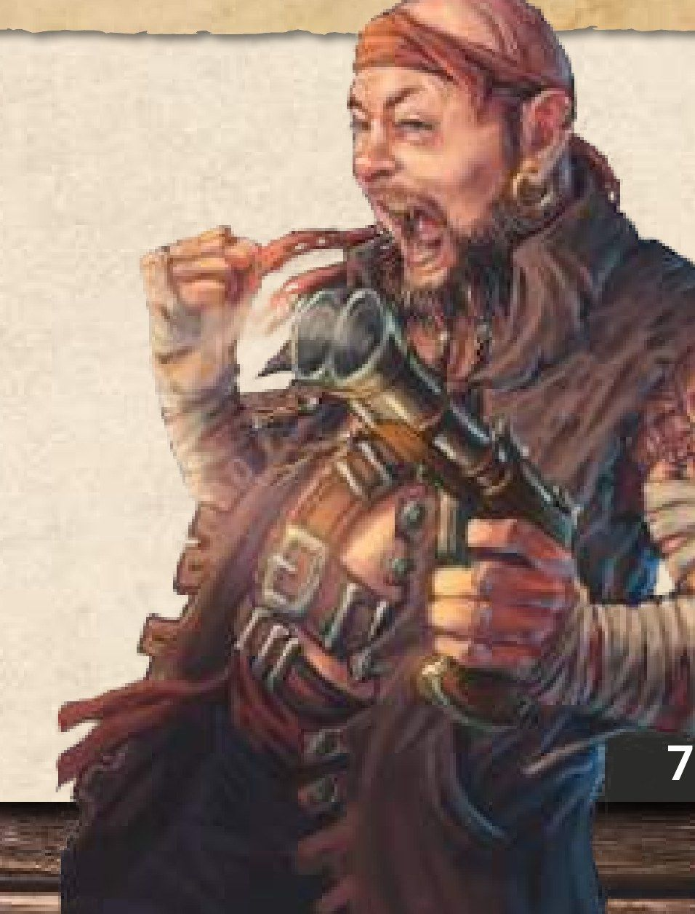
07 · 回合流程
阶段 1
船长选出副官和领航员。
阶段 2
不满意？亮枪叛乱。
阶段 3
三人合力决定航向。
阶段 4
刚掌舵的人下回合休息。
下一回合由当前船长重新开始“任命领航团队”。
08 · 阶段 1 · 任命领航团队
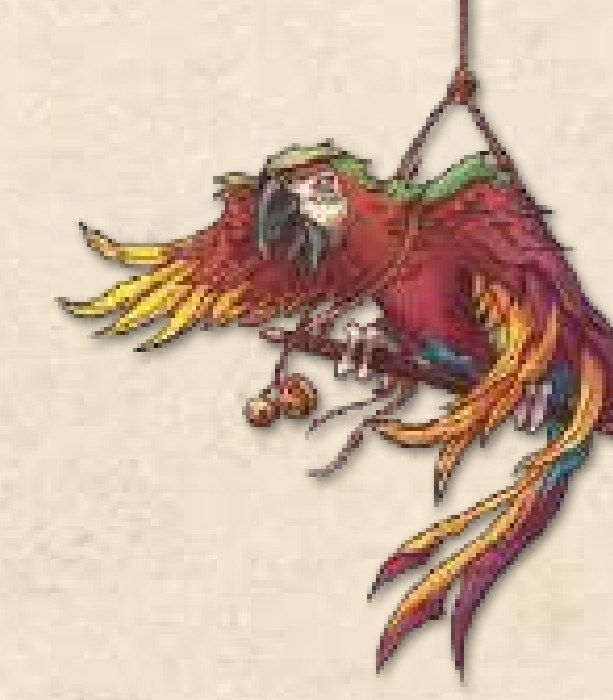
1
船长把副官徽章交给一位玩家。
2
再把领航员徽章交给另一位玩家。
✕
船长不能任命自己。
✕
休班的玩家不能被任命。
✕
副官和领航员不能是同一个人。
09 · 阶段 2 · 忠诚考验
1
除船长外，每人偷偷把 0 把或几把枪握进一只拳头。
2
船长数到三，同时摊开，把亮出的枪加起来。
3
达到门槛 → 叛乱成功：亮枪最多的人当新船长，参与者亮出的枪全部弃掉，新船长重新开始本轮。
4
没达到 → 枪收回，进入领航。
平局：现任船长逐个点名让人退出，直到只剩一人。
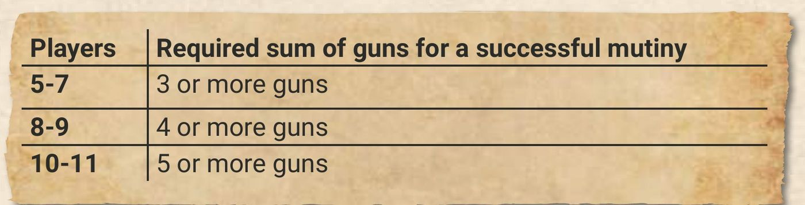
叛乱门槛
5–7 人 · 3 把以上
8–9 人 · 4 把以上
10–11 人 · 5 把以上
10 · 阶段 3 · 领航
1
船长：抽 2 张，弃 1 张，另 1 张放进船长日志。
2
副官：抽 2 张，弃 1 张，另 1 张放进船长日志。
3
船长日志：合上摇一摇打乱，交给领航员。
4
领航员：偷看 2 张，弃 1 张，留 1 张还给船长。
5
船长：亮出最后这张牌，执行它。
弃掉的牌背面朝上进“深海”（弃牌堆）。
必须沉默
领航时三人不能说话、不能暗示，也不能用“随机弃牌”来证明自己没得选。
船长亮牌之后，大家才能讨论抽到、弃掉了什么——但有人可能在说谎。
11 · 执行航海卡
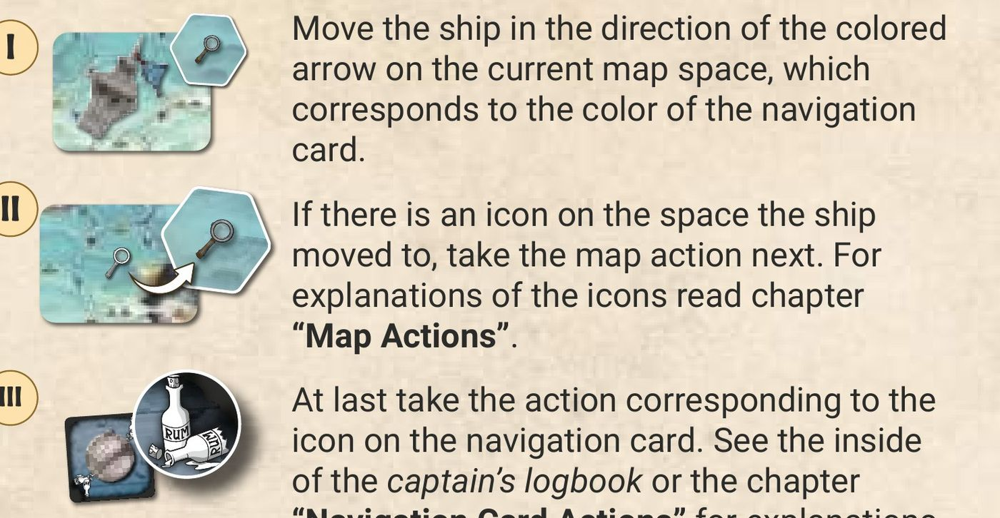
Ⅰ
移动：按卡牌颜色，沿当前格子同色的箭头移动船。
Ⅱ
地图行动：船到达的格子有图标，就执行它。
Ⅲ
卡牌行动：最后执行航海卡上图标的行动。
履历：执行过的航海卡放在船长面前，一直公开到游戏结束，永远不洗回牌堆——它会暴露船长的倾向。
12 · 阶段 4 · 休班
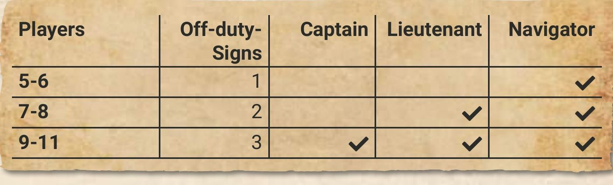
休班规则
· 不能被任命为副官或领航员
· 可以参加叛乱，也可以当上船长
· 只在成功领航后传递，叛乱后不传
· 可用人数不够时，休班牌失效
谁拿休班牌
5–6 人 · 1 张 · 领航员
7–8 人 · 2 张 · 副官、领航员
9–11 人 · 3 张 · 船长、副官、领航员
重洗：领航前抽牌堆不足 4 张，就把弃牌堆和抽牌堆合并洗匀（履历牌除外）。
13 · 地图行动
船长偷偷检查一名玩家的海员袋（其他人闭眼），可以说出结果——也可能撒谎。
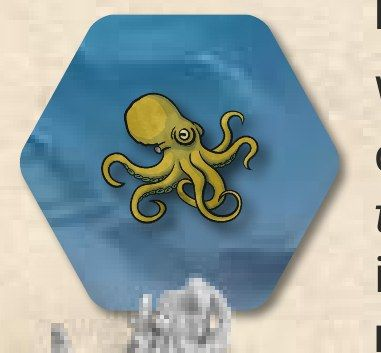
船长选一名玩家（不能选自己），他立刻出局。选中邪教首领 → 邪教立即获胜！
公开一个该玩家“不属于”的阵营。
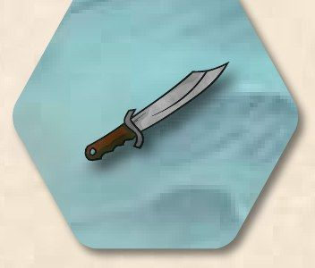
被选中的人不能说话，也不能当船长。
注意：被搜舱或鞭刑检查过的人，以后不能再被转化为邪教徒。
14 · 航海卡行动
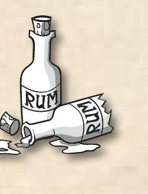
船长下台，船长身份顺时针传给履历牌最少的下一位玩家。
被选中的人偷看最近弃掉的 3 张航海卡，可以说——也可能撒谎。
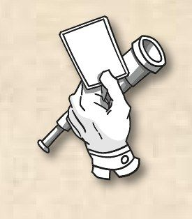
被选中的人看抽牌堆顶 1 张，可放回或弃进深海。
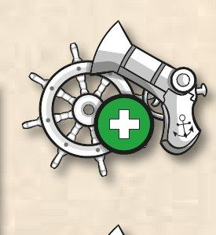
领航员从供应区拿 1 把枪（仅远航）。
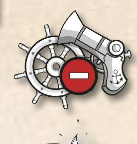
领航员弃掉 1 把枪（如果有）。
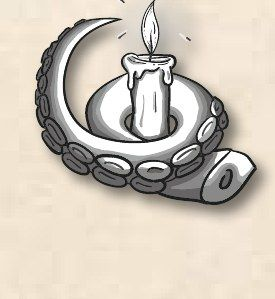
领航结束时，船长翻开 1 张邪教仪式卡。
15 · 邪教仪式卡
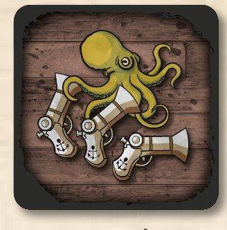
所有人闭眼，邪教首领把 3 把枪分给最多 3 名玩家（可以给自己）。
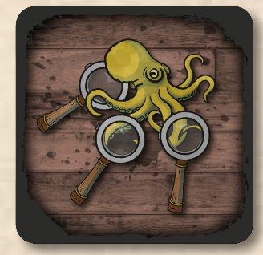
所有人闭眼，邪教首领偷看当前船长、副官、领航员的阵营筹码。
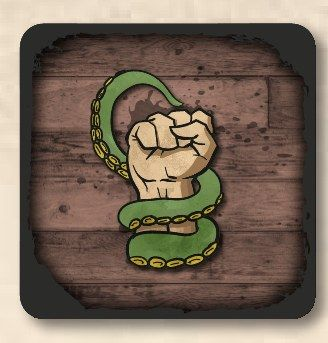
邪教首领秘密把一名可转化的玩家变成邪教徒，从此与邪教共胜负。
被搜舱或鞭刑检查过的人属于“不可转化”。
16 · 拒绝指挥与角色卡
拒绝指挥（跳海）
· 领航员看过两张牌后可以宣布跳海
· 两张牌都弃掉，领航员立刻出局并保持沉默
· 船长马上指定紧急领航员（可选休班的人），不能叛乱，副官不变，立刻再领航
· 邪教首领跳海不能让邪教获胜
角色卡
· 开局每人 1 张，背面朝上
· 任何时候都可以翻开，使用特殊能力
· 大多只能用一次，部分有时机限制
· 5–6 人局建议不用 Debt Collector、Minstrel、Mentor
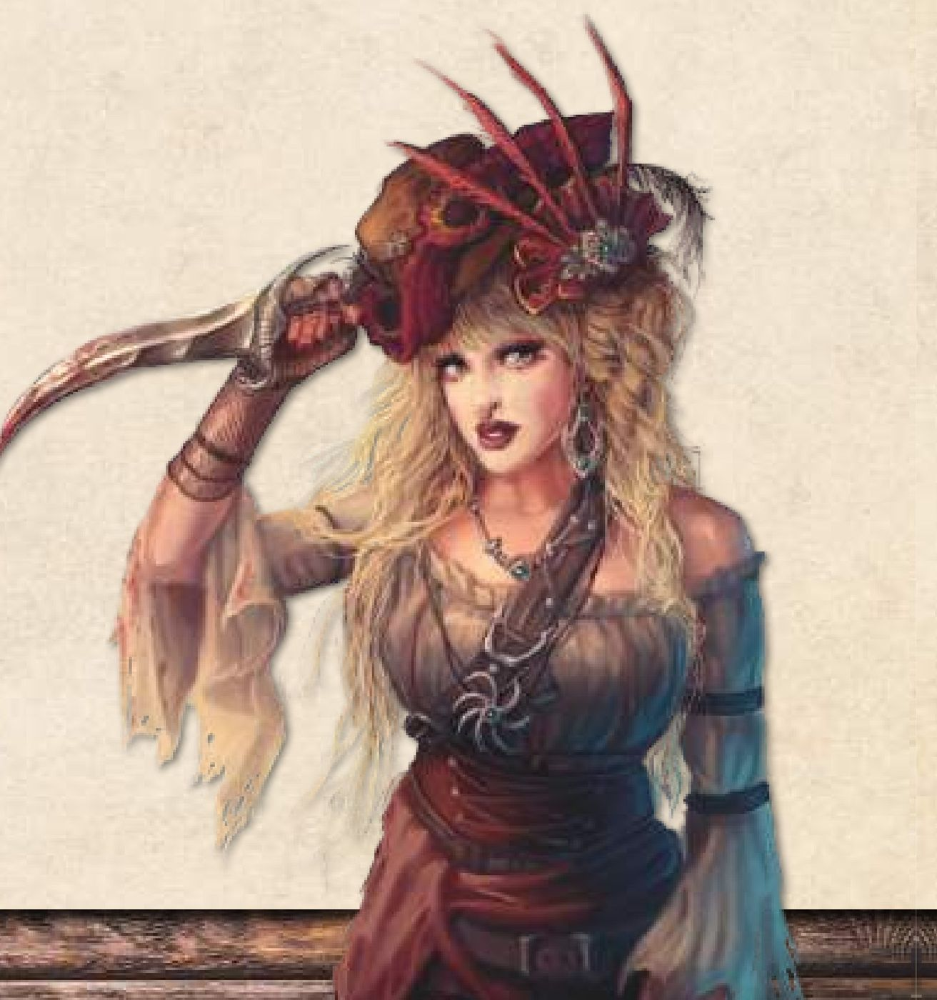
17 · 游戏结束与新手策略
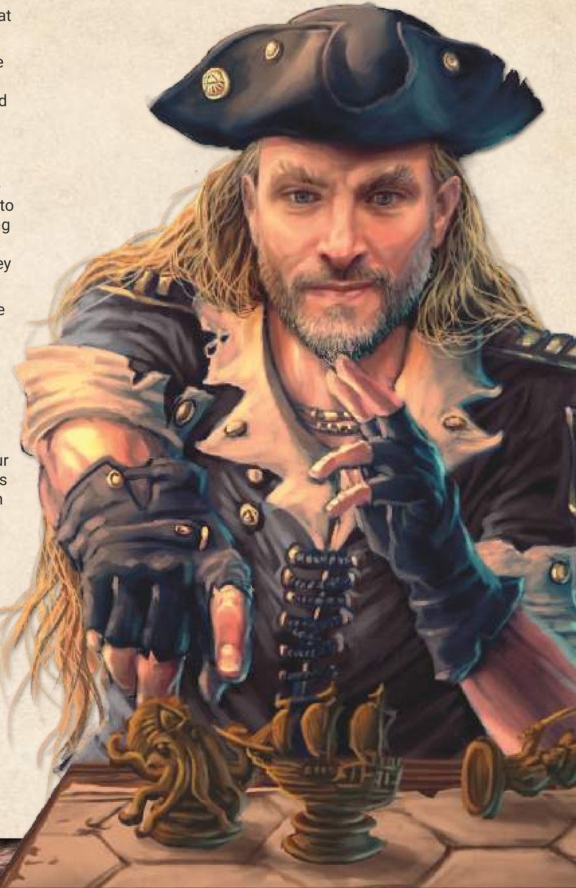
海
海盗：表现得像水手，开局可选蓝牌伪装；关键时刻别怕暴露，把船往西开。光潜伏不够，要主动和邪教合作。
邪
邪教首领：让船在地图中间来回摆，去“喂克拉肯”格或北边胜利区；黄色航海卡能帮你发展邪教徒。
水
水手：说实话，找出同伴——没理由假装海盗。
!
撒了谎？为揭穿别人而说的谎，事后尽快向大家说明。
总结
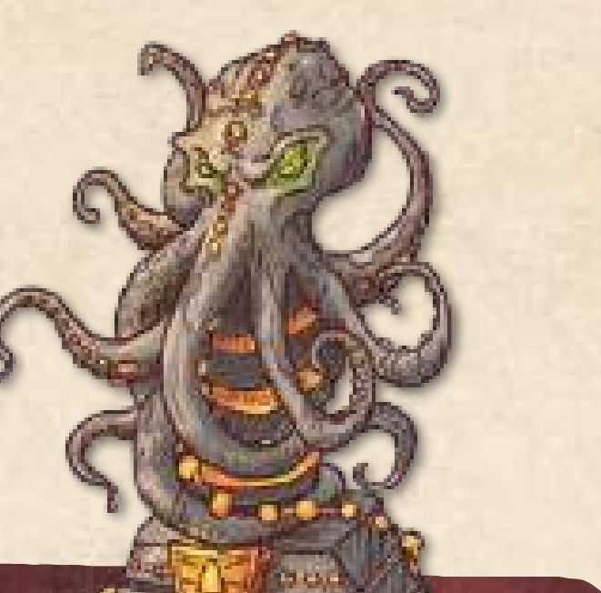
1
每人秘密属于水手、海盗或邪教。
2
船长任命副官和领航员，不满就亮枪叛乱。
3
三人抽 4 张、留 1 张，决定航向。
4
推理和说服，才是这个游戏的灵魂。
规则依据 Funtails《Feed the Kraken》官方英文规则书 1.0 整理，插图均取自该规则书。